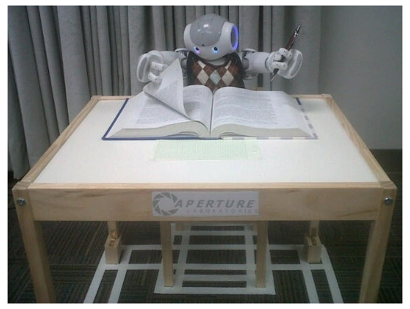

Welcome to my home page. I am currently a second year
graduate student pursuing a Ph.D. in Computer Science
at WPI. I work under the advisement of Assistant
Professor Sonia
Chernova and am a member of the Robot
Autonomy and Interactive Learning (RAIL) research
group. I received my B.S. in Computer Science with
honors from Dickinson
College in May 2011. My research interests include
learning algorithms, cloud-solutions, and
crowdsourcing for personal robotics applications,
human-robot interaction, web robotics, and social
robotics.
For additional information,
please refer to my CV, research, or software pages.

Research Projects
RobotsFor.Me: A New
Approach to Conducting Human-Robot Interaction Studies
Through Crowdsourcing WPI
2012-present, In Collaboration with Prof. Sonia
Chernova and David Kent
Human-Robot Interaction (HRI) is a rapidly expanding
field of study that focuses on allowing non-roboticist
users to naturally and effectively interact with robots.
The importance of conducting extensive user studies has
become a fundamental component of HRI research; however,
due to the nature of robotics research, such studies often
become expensive, time consuming, and available only to
limited demographics. In this work I propose a novel
framework for bringing robotic environments and
experiments to the World Wide Web. Such a framework will
help the HRI community to conduct low cost, large scale
user studies across broader populations, and rapid
algorithm development and testing, all of which were
previously unfeasible.
Robot Management System (RMS) Framework
Documentation. (html)
Alexander, B.; Hsiao, K.; Jenkins, C.; Suay, B.;
Toris, R. (2012). Robot Web Tools [ROS Topics]. In Robotics
& Automation Magazine, IEEE. 19(4), (pp. 20-23
) ( PDF) (
BibTeX)
Robot Autonomy and Interactive Learning
(RAIL) Research Group Project Website. (html)
A
Practical Comparison of Three Robot Learning from
Demonstration Algorithms WPI
2011-2012, In Collaboration with Prof. Sonia
Chernova and Halit
Bener Suay
Research on robot Learning from Demonstration (LfD)
has seen significant growth in recent years, but existing
evaluations have focused exclusively on algorithmic
performance and not on usability factors, especially with
respect to naïve users. In our research we present
findings from a comparative user study in which we asked
non-expert users to use and evaluate three different robot
learning from demonstration algorithms. The three
algorithms selected -- Behavior Networks, Interactive
Reinforcement Learning, and Confidence Based Autonomy --
utilize distinctively different policy learning and
demonstration approaches, enabling us to examine a broad
spectrum of the field. Participants in the study showed a
preference for interfaces where they controlled the robot
directly (teleoperation and guidance) instead of providing
retroactive feedback for past actions (reward and
correction). Our results identify common trends and
misconceptions that arise when non-experts are asked to
use these algorithms.
Resources:
Suay, H.B., Toris, R., Chernova, S. (2012). A
Practical Comparison of Three Robot Learning from
Demonstration Algorithms. In International
Journal of Social Robotics, Special Issue on Learning
from Demonstration. 4(4), (pp. 319-330). (PDF) (BibTeX)
Toris, R., Suay, H.B., Chernova, S. (2012,
March). A Practical Comparison of Three Robot
Learning from Demonstration Algorithms. Poster session
presented at HRI 2012: ACM/IEEE International Conference
on Human-Robot Interaction, Boston, MA. (PDF) (BibTeX)
Toris, R., Suay, H.B., Chernova, S. (2012). A
Practical Comparison of Three Robot Learning from
Demonstration Algorithms (Extended Abstract). In Proceedings
of HRI 2012: ACM/IEEE International Conference on
Human-Robot Interaction. Boston, MA. (PDF) (BibTeX)
Robot Autonomy and Interactive Learning
(RAIL) Research Group Project Website. (html)
Evolving
Robotic Desires: A New Approach to Bridging the Reality
Gap Dickinson
College 2010-2011, Advised by Prof.
Grant Braught
Evolutionary Robotics is an expanding area in the
world of robotics that incorporates ideas from fields such
as Biology, Engineering, and Computer Science. The main
idea behind Evolutionary Robotics is to use computerized
models of biological evolutionary phenomena to evolve
robotic behaviors. In recent years, new breakthroughs have
been made to further its development, prove its
effectiveness, and provide solutions to interesting
problems within the robotics world. The approach of
evolving controllers for autonomous robots has established
benefits over a more traditional hand-coded approach.
Like most fields of research, Evolutionary Robotics
contains its own set of problems. One such problem
involves the use of simulators to speed up the
evolutionary processes. When transferring the robotic
controller from the simulation to the physical robot its
performance tends to decrease on a given task; this issue
is referred to as the reality gap problem. In this
research, a new approach to bridging the reality gap is
presented and explored. The idea is to evolve a robotic
controller that generates desires based on its current
state and uses reinforcement learning to select actions
that achieve these desires. By doing so, the goal is to
have a robotic controller adapt to differences,
uncertainties, and perturbations within the real world
once transferred from simulation.
Resources:
Toris, R. (2011). Evolving Robotic
Desires: A New Approach to Bridging the Reality Gap.
Undergraduate Thesis, Dickinson College, Carlisle,
PA. (PDF) (BibTeX)
Toris, R. (2011, April). Evolving
Robotic Desires: A New Approach to Bridging the
Reality Gap. Poster session presented at URCPA 2011:
Undergraduate Research at the Capitol - Pennsylvania,
Harrisburg, PA. (PDF) (BibTeX)
Toris, R. (2011). Evolving Robotic Desires: A New
Approach to Bridging the Reality Gap. In Proceedings
of PACISE 2011: Pennsylvania Association of Computer
and Information Science Educators (pp. 83-89).
Shippensburg, PA. (PDF) (BibTeX)
Integration
Between dLife and the Player/Stage Robotics Simulation
System Dickinson
College 2009-2010, Advised by Prof.
Grant Braught
The areas of artificial life, artificial
intelligence, and robotics are progressive fields with
nearly limitless possibilities. Numerous software packages
have been created in a variety of languages to help
further work in these areas and open up new possibilities.
The dLife software package is a Java library developed by
Professor Grant Braught of Dickinson College aimed
specifically at these three fields. dLife includes
extensive packages for key components such as neural
networks, genetic algorithms, basic computer vision and
robot control. The packages for robot control, however
have been limited to working with physical robots. In many
situations, working with physical robots can be expensive,
time consuming, and/or impractical. To address these
situations I have developed additional packages in dLife
that create a bridge between its resources, and those of
Player/Stage (an open source robotics platform used for
simulations). These additional packages produce a near
seamless integration between the physical robots that
dLife already supports and simulated versions in
Player/Stage.
The capability to both build Player/Stage simulations
and control the Player/Stage system have also been added
to dLife. Care has been taken to ensure that there is no
change in API between interacting with a simulated robot
in Player/Stage and its physical equivalent. Thus, any
program interacting with a simulated robot via dLife can
also interact with the corresponding physical robot.
Furthermore, dLife allows each simulated sensor to have a
custom noise profile allowing the physical robot’s sensors
to be more accurately modeled. The addition of this
Player/Stage interface makes dLife an ideal platform for
conducting multi-simulation experiments, such as the
evolution of robot controllers.
Resources:
Toris, R. (2010, April). Integration
Between dLife and the Player/Stage Robotics Simulation
System. Poster session presented at CCSCNE 2010:
Consortium for Computing Sciences in Colleges —
Northeastern Region, Hartford, CT. (PDF) (BibTeX)
"Eye Robot", Dickinson College Extra
Features, October 2009. (html)
ROS (Robot
Operating System) Packages
As part of my research at WPI and for fun, I
have developed many different ROS packages.
As with all ROS software, all packages and stacks
are available free and open source and can be
downloaded from the WPI RAIL
GitHub page. For additional information on my ROS
contributions, please refer to my
ROS Wiki page.
Robot Web Tools is a collection of open-source
modules and tools for building web-based robot apps.
Robot Web Tools allows web applications to interface
with a variety of robots running middleware like the
popular Robot
Operating System (ROS). Additional information on
Robot Web Tools can be found on the Robot Web
Tools Website.
The dLife open source software package is a
Java teaching and research library developed by Professor
Grant Braught of Dickinson
College aimed at the fields of artificial
intelligence, bio-inspired artificial intelligence,
artificial life and robotics. dLife
includes extensive packages for components such as
neural networks, genetic algorithms, computer
vision, and robot control. As part of my
undergraduate work, I have contributed packages for
interaction with the Khepera
III mobile robot and Player/Stage
simulation system. Additional information on dLife
can be found on the dLife
Website.
Best Late-Breaking Report Nomination,
ACM/IEEE International Conference on Human-Robot
Interaction (HRI), 2012
Annual Senior Research Symposium Finalist,
Dickinson College, 2011
Best Paper Award - Undergraduate Category,
Pennsylvania Association of Computer and
Information Science Educators (PACISE), 2011
Academic Awards
Cum Laude, Dickinson College, 2011
Graduation with Honors, Dickinson College
Department of Mathematics and Computer Science,
2011
Dean’s List, Dickinson College, Fall 2009 -
Spring 2011
The Richard Howland Prize in Mathematics
and Computer Science, Dickinson College, 2011
The Richard Howland Memorial Scholarship,
Dickinson College, 2010
The Jane Hill Prize in Computer Science,
Dickinson College, 2008
Honor Societies
Upsilon Pi Epsilon, International Honor
Society for the Computing and Information
Disciplines, 2010 Induction
Alpha Lambda Delta, National Academic Honor
Society for Freshman, 2008 Induction
Employment
Research Assistant, Worcester Polytechnic
Institute, Worcester, MA
2012 - Present
Research Intern, Willow Garage, Inc., Menlo
Park, CA
Winter 2013
Teaching Assistant, Worcester Polytechnic
Institute, Worcester, MA
2011 - 2012
Software Developer, Cirrata Inc, Wilton, CT
Summer 2011
Teaching Assistant, Dickinson College,
Carlisle, PA
2009 - 2011
dLife Software Developer, Dickinson
College, Carlisle, PA
2009 - 2010
Publications
Journal Articles
Suay, H.B., Toris, R., Chernova, S. (2012).
A Practical Comparison of Three Robot Learning
from Demonstration Algorithms. In International
Journal of Social Robotics, Special Issue on
Learning from Demonstration. 4(4), (pp.
319-330).
Magazine Articles
Alexander, B.; Hsiao, K.; Jenkins, C.;
Suay, B.; Toris, R. (2012). Robot Web Tools [ROS
Topics]. In Robotics & Automation
Magazine, IEEE. 19(4), (pp. 20-23 )
Conference Proceedings
Toris, R., Suay, H.B., Chernova, S. (2012).
A Practical Comparison of Three Robot Learning
from Demonstration Algorithms (Extended Abstract).
In Proceedings of HRI 2012: ACM/IEEE
International Conference on Human-Robot
Interaction. Boston, MA.*
Toris, R. (2011). Evolving Robotic Desires:
A New Approach to Bridging the Reality Gap. In Proceedings
of PACISE 2011: Pennsylvania Association of
Computer and Information Science Educators (pp.
83-89). Shippensburg, PA.*
Poster Presentations
Toris, R., Suay, H.B., Chernova, S. (2012,
March). A Practical Comparison of Three
Robot Learning from Demonstration Algorithms.
Poster session presented at HRI 2012: ACM/IEEE
International Conference on Human-Robot
Interaction, Boston, MA.
Toris, R. (2011, April). Evolving
Robotic Desires: A New Approach to Bridging the
Reality Gap. Poster session presented at URC-PA
2011: Undergraduate Research at the Capitol -
Pennsylvania, Harrisburg, PA.
Toris, R. (2010, April). Integration
Between dLife and the Player/Stage Robotics
Simulation System. Poster session presented at
CCSCNE 2010: Consortium for Computing Sciences in
Colleges - Northeastern Region, Hartford, CT.
Theses
Toris, R. (2011). Evolving Robotic
Desires: A New Approach to Bridging the Reality
Gap. Undergraduate Thesis, Dickinson College,
Carlisle, PA.
* - indicates research award/nomination
Professional Activities
Society Memberships
The Association for Computing Machinery
(ACM)
The ACM Special Interest Group on
Artificial Intelligence (SIGART)
Departmental Service
Computer Science Graduate Council,
Worcester Polytechnic Institute, 2011-2012
lfd - Learning from Demonstration
algorithms developed by the RAIL research group at
WPI.
cba, lfd_common
nao_rail - The nao_rail
meta-package contains packages to control and
query an Aldebaran NAO. These packages can be used
in conjunction with existing NAO packages to add
additional features.
nao_speech, nao_vision
rail_cv_project - Completed as a
graduate class project, this meta-package tracks a
toy computer using 2D RGB information and can
cause the PR2 to point at the object in 3D space
using the Kinect's point cloud.
rail_gazebo - Gazebo models and
world files created by the RAIL team at WPI.
rail_models, rail_worlds
rail_maps - Maps generated by the
RAIL group at WPI.
rail_youbot - The rail_youbot
meta-package contains software such as customized
URDF models of the YouBot and teleoperation
software.
dlife.robot.khepera3 - The dlife.robot.khepera3
package contains native Java classes and
interfaces that can be used to control and query a
Khepera III mobile robot.
dlife.robot.player - The dlife.robot.player
package contains native Java classes and
interfaces that support interaction with the
Player/Stage simulation system.
Press
"Eye Robot", Dickinson College Extra
Features, October 2009.


{kind=link}
{kind=link}